Magnetismo y Electromagnetismo
Permanent magnets
Hace siglos se descubrió que ciertos tipos de rocas minerales poseían propiedades inusuales de atracción hacia el hierro metálico. Un mineral en particular, llamadopiedra imán, omagnetita, se encuentra mencionado en registros históricos muy antiguos (hace unos 2500 años en Europa, y mucho antes en el Lejano Oriente) como tema de curiosidad. Más tarde, se empleó como ayuda a la navegación, ya que se descubrió que un trozo de esta inusual roca tendería a orientarse en dirección norte-sur si se le dejaba girar libremente (suspendido de una cuerda o de un flotador en el agua). Un estudio científico realizado en 1269 por Peter Peregrinus reveló que el acero podría "cargarse" de manera similar con esta propiedad inusual después de frotarlo contra uno de los "polos" de un trozo de imán.
A diferencia de las cargas eléctricas (como las que se observan cuando se frota el ámbar contra una tela), los objetos magnéticos poseían dos polos de efecto opuesto, denominados "norte" y "sur" según su propia orientación hacia la Tierra. Como descubrió Peregrinus, era imposible aislar uno de estos polos por sí solo cortando un trozo de imán por la mitad: cada trozo resultante poseía su propio par de polos:
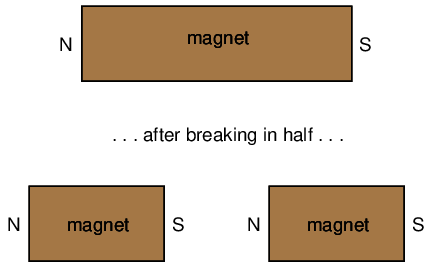
Al igual que las cargas eléctricas, sólo se podían encontrar dos tipos de polos: norte y sur (por analogía, positivo y negativo). Al igual que ocurre con las cargas eléctricas, los polos iguales se repelen, mientras que los polos opuestos se atraen. Esta fuerza, como la causada por la electricidad estática, se extendía de manera invisible sobre el espacio y podía incluso atravesar objetos como papel y madera con poco efecto sobre la fuerza.
El filósofo y científico René Descartes señaló que este "campo" invisible se podía mapear colocando un imán debajo de un trozo plano de tela o madera y esparciendo limaduras de hierro encima. Las limaduras se alinearán con el campo magnético, "mapeando" su forma. El resultado muestra cómo el campo continúa ininterrumpido de un polo de un imán al otro:
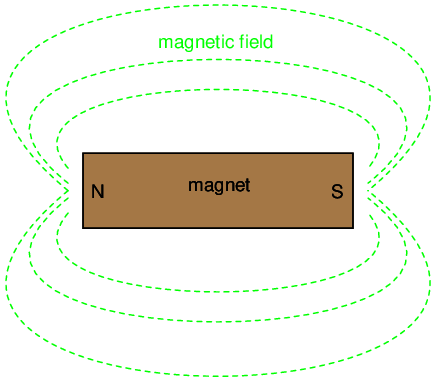
Como ocurre con cualquier tipo de campo (eléctrico, magnético, gravitacional), la cantidad total o efecto del campo se denominaflujo, mientras que el "empuje" que causa que se forme el flujo en el espacio se llamafuerza. Michael Faraday acuñó el término "tubo" para referirse a una cadena de flujo magnético en el espacio (el término "línea" se usa más comúnmente ahora). De hecho, la medición del flujo del campo magnético a menudo se define en términos del número de líneas de flujo, aunque es dudoso que dichos campos existan en líneas individuales y discretas de valor constante.
Las teorías modernas del magnetismo mantienen que un campo magnético es producido por una carga eléctrica en movimiento y, por lo tanto, se teoriza que el campo magnético de los llamados imanes "permanentes", como la piedra imán, es el resultado de que los electrones dentro de los átomos de hierro giran uniformemente en la misma dirección. El hecho de que los electrones de los átomos de un material estén sujetos o no a este tipo de giro uniforme lo dicta la estructura atómica del material (al igual que la conductividad eléctrica está dictada por la unión de los electrones en los átomos de un material). Por lo tanto, sólo ciertos tipos de sustancias reaccionan con los campos magnéticos, y aún menos tienen la capacidad de sostener permanentemente un campo magnético.
El hierro es uno de esos tipos de sustancias que se magnetizan fácilmente. Si se acerca un trozo de hierro a un imán permanente, los electrones dentro de los átomos del hierro orientan sus espines para igualar la fuerza del campo magnético producido por el imán permanente, y el hierro se "magnetiza". El hierro se magnetizará de tal manera que incorporará líneas de flujo magnético en su forma, lo que lo atraerá hacia el imán permanente, sin importar qué polo del imán permanente se le ofrezca al hierro:
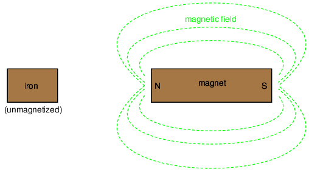
El hierro previamente no magnetizado se magnetiza a medida que se acerca al imán permanente. No importa qué polo del imán permanente se extienda hacia el hierro, el hierro se magnetizará de tal manera que será atraído hacia el imán:
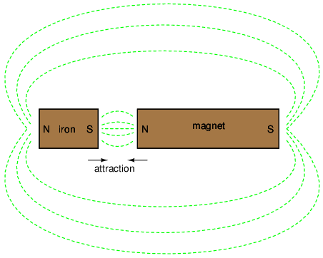
Haciendo referencia a las propiedades magnéticas naturales del hierro (latín = "ferrum"), unferromagnéticoUn material es aquel que se magnetiza fácilmente (sus átomos constituyentes orientan fácilmente sus espines electrónicos para adaptarse a la fuerza de un campo magnético externo). Todos los materiales son magnéticos hasta cierto punto, y aquellos que no se consideran ferromagnéticos (fácilmente magnetizables) se clasifican comoparamagnético(ligeramente magnético) odiamagnético(tienden a excluir los campos magnéticos). De los dos, los materiales diamagnéticos son los más extraños. En presencia de un campo magnético externo, en realidad se magnetizan ligeramente en la dirección opuesta, ¡para repeler el campo externo!
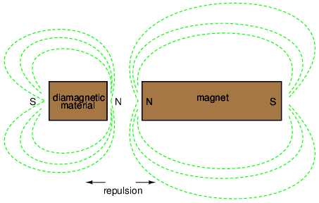
Si un material ferromagnético tiende a retener su magnetización después de que se elimina un campo externo, se dice que tiene buenaretentividad. Ésta, por supuesto, es una cualidad necesaria para un imán permanente.
- REVISAR:
- Piedra imán(también llamadoMagnetita) es un mineral magnético "permanente" de origen natural. Por "permanente" se entiende que el material mantiene un campo magnético sin ayuda externa. La característica de cualquier material magnético para hacerlo se llamaretentividad.
- FerromagnéticoLos materiales se magnetizan fácilmente.
- ParamagnéticoLos materiales se magnetizan con más dificultad.
- diamagnéticoEn realidad, los materiales tienden a repeler los campos magnéticos externos al magnetizarse en la dirección opuesta.
Electromagnetism
El descubrimiento de la relación entre el magnetismo y la electricidad, como tantos otros descubrimientos científicos, se produjo casi por accidente. El físico danés Hans Christian Oersted estaba dando una conferencia un día de 1820 sobre laposibilidadde que la electricidad y el magnetismo están relacionados entre sí, ¡y lo demostró de manera concluyente mediante experimentos frente a toda su clase! Al hacer pasar una corriente eléctrica a través de un alambre metálico suspendido sobre una brújula magnética, Oersted pudo producir un movimiento definido de la aguja de la brújula en respuesta a la corriente. Lo que comenzó como una conjetura al inicio de la sesión de clase se confirmó como un hecho al final. ¡No hace falta decir que Oersted tuvo que revisar sus apuntes para futuras clases! Su descubrimiento fortuito allanó el camino para una rama de la ciencia completamente nueva: el electromagnetismo.
Experimentos detallados demostraron que el campo magnético producido por una corriente eléctrica siempre está orientado perpendicular a la dirección del flujo. Un método simple para mostrar esta relación se llamaregla de la mano izquierda. En pocas palabras, la regla de la mano izquierda dice que las líneas de flujo magnético producidas por un cable que transporta corriente estarán orientadas en la misma dirección que los dedos curvados de la mano izquierda de una persona (en la posición de "autostop"), con el pulgar apuntando en la dirección del flujo de electrones:
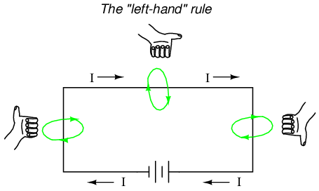
El campo magnético rodea este trozo recto de alambre portador de corriente, y las líneas de flujo magnético no tienen polos "norte" o "sur" definidos.
Si bien el campo magnético que rodea un cable que transporta corriente es realmente interesante, es bastante débil para cantidades comunes de corriente, capaz de desviar la aguja de una brújula y no mucho más. Para crear una fuerza de campo magnético más fuerte (y en consecuencia, más flujo de campo) con la misma cantidad de corriente eléctrica, podemos enrollar el cable en forma de bobina, donde los campos magnéticos que circulan alrededor del cable se unirán para crear un campo más grande con una polaridad magnética definida (norte y sur):
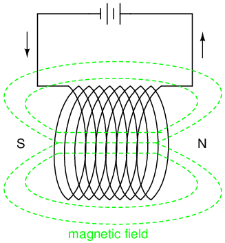
La cantidad de fuerza del campo magnético generada por un cable enrollado es proporcional a la corriente a través del cable multiplicada por el número de "vueltas" o "enrollamientos" del cable en la bobina. Esta fuerza de campo se llamafuerza magnetomotriz(mmf), y es muy análogo a la fuerza electromotriz (E) en un circuito eléctrico.
An electroimánEs un trozo de alambre destinado a generar un campo magnético con el paso de corriente eléctrica a través de él. Aunque todos los conductores que transportan corriente producen campos magnéticos, un electroimán generalmente se construye de tal manera que se maximice la fuerza del campo magnético que produce para un propósito especial. Los electroimanes encuentran aplicaciones frecuentes en investigación, industria, productos médicos y de consumo.
Como imán controlable eléctricamente, los electroimanes encuentran aplicación en una amplia variedad de dispositivos "electromecánicos": máquinas que efectúan fuerza mecánica o movimiento a través de energía eléctrica. Quizás el ejemplo más obvio de una máquina de este tipo sea lamotor eléctrico.
Otro ejemplo es elrelé, un interruptor controlado eléctricamente. Si se construye un mecanismo de contacto de interruptor de manera que pueda ser accionado (abierto y cerrado) mediante la aplicación de un campo magnético, y se coloca una bobina de electroimán en las proximidades para producir ese campo requerido, será posible abrir y cerrar el interruptor mediante la aplicación de una corriente a través de la bobina. En efecto, esto nos da un dispositivo que permite que la electricidad controle la electricidad:
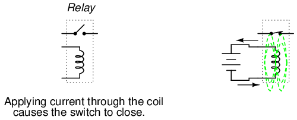
Los relés se pueden construir para accionar múltiples contactos de interruptor o operarlos en "reversa" (al energizar la bobinaabiertoel contacto del interruptor y desconectar la bobina permitirá que se cierre nuevamente).
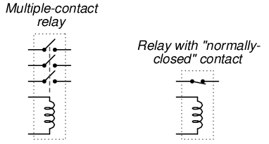
- REVISAR:
- Cuando los electrones fluyen a través de un conductor, se producirá un campo magnético alrededor de ese conductor.
- La regla de la mano izquierda establece que las líneas de flujo magnético producidas por un cable que transporta corriente estarán orientadas en la misma dirección que los dedos curvados de la mano izquierda de una persona (en la posición de "autostop"), con el pulgar apuntando en la dirección del flujo de electrones.
- La fuerza del campo magnético producida por un cable que transporta corriente se puede aumentar considerablemente dándole forma al cable en forma de bobina en lugar de una línea recta. Si se enrolla en forma de bobina, el campo magnético se orientará a lo largo del eje de la longitud de la bobina.
- La fuerza del campo magnético producida por un electroimán (llamadofuerza magnetomotriz, o mmf), es proporcional al producto (multiplicación) de la corriente a través del electroimán y el número de "vueltas" completas de la bobina formada por el cable.
Unidades de medida magnéticas
Si la carga de dos sistemas de medición para cantidades comunes (inglés versus métrico) te confunde, ¡este no es el lugar para ti! Debido a una temprana falta de estandarización en la ciencia del magnetismo, nos hemos visto plagados de no menos de tres sistemas completos de medición de cantidades magnéticas.
Primero, debemos familiarizarnos con las diversas cantidades asociadas con el magnetismo. Hay bastantes más cantidades con las que lidiar en los sistemas magnéticos que en los sistemas eléctricos. En el caso de la electricidad, las cantidades básicas son voltaje (E), corriente (I), resistencia (R) y potencia (P). Los primeros tres están relacionados entre sí por la Ley de Ohm (E=IR ; I=E/R ; R=E/I), mientras que la Potencia está relacionada con el voltaje, la corriente y la resistencia por la Ley de Joule (P=IE ; P=I2R ; P=E2/R).
Con el magnetismo, tenemos que lidiar con las siguientes cantidades:
Fuerza magnetomotriz-- La cantidad de fuerza del campo magnético, o "empuje". Análogo al voltaje eléctrico (fuerza electromotriz).
Flujo de campo-- La cantidad de efecto de campo total, o "sustancia" del campo. Análogo a la corriente eléctrica.
Intensidad de campo-- La cantidad de fuerza de campo (mmf) distribuida a lo largo de la longitud del electroimán. A veces se le conoce comoFuerza magnetizante.
Densidad de flujo-- La cantidad de flujo de campo magnético concentrado en un área determinada.
Reluctancia-- La oposición al flujo del campo magnético a través de un volumen dado de espacio o material. Análogo a la resistencia eléctrica.
Permeabilidad-- La medida específica de la aceptación del flujo magnético por parte de un material, análoga a la resistencia específica de un material conductor (ρ), excepto a la inversa (una mayor permeabilidad significa un paso más fácil del flujo magnético, mientras que una mayor resistencia específica significa un paso más difícil de la corriente eléctrica).
Pero espera. . . ¡La diversión apenas comienza! No sólo tenemos más cantidades que seguir con el magnetismo que con la electricidad, sino que tenemos varios sistemas diferentes de unidades de medida para cada una de estas cantidades. Al igual que con las cantidades comunes de longitud, peso, volumen y temperatura, tenemos sistemas tanto ingleses como métricos. Sin embargo, en realidad existe más de un sistema métrico de unidades, ¡y se utilizan múltiples sistemas métricos en las mediciones de campos magnéticos! uno se llama elcgs, que significaCentimetro-GRAM-Ssegundo, que denota las medidas raíz en las que se basa todo el sistema. El otro fue originalmente conocido como elmkssistema, que significabaMeter-Kilograma-Ssegundo, que luego fue revisado en otro sistema, llamadormks, representandoRnacionalizadoMeter-Kilograma-Ssegundo. Este acabó siendo adoptado como estándar internacional y renombradoSI (SsistemaIinternacional).
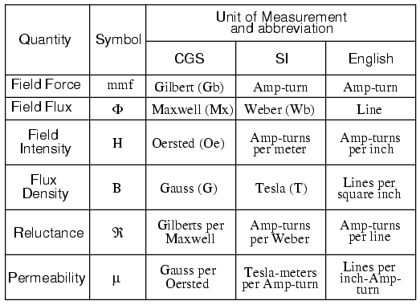
Y sí, el símbolo µ es realmente el mismo que el prefijo métrico "micro". ¡Esto me parece especialmente confuso, usar exactamente el mismo carácter alfabético para simbolizar tanto una cantidad específica como un prefijo métrico general!
Como ya habrás adivinado, la relación entre la fuerza del campo, el flujo del campo y la reluctancia es muy parecida a la que existe entre las cantidades eléctricas de fuerza electromotriz (E), corriente (I) y resistencia (R). Esto proporciona algo parecido a la Ley de Ohm para circuitos magnéticos:
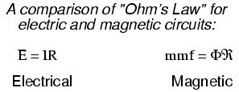
Y, dado que la permeabilidad es inversamente análoga a la resistencia específica, la ecuación para encontrar la reluctancia de un material magnético es muy similar a la de encontrar la resistencia de un conductor:
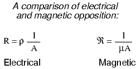
En cualquier caso, una pieza de material más larga proporciona una mayor oposición, siendo iguales todos los demás factores. Además, un área transversal más grande genera menos oposición, siendo todos los demás factores iguales.
La principal advertencia aquí es que la renuencia de un material al flujo magnético en realidadcambioscon la concentración de flujo que lo atraviesa. Esto hace que la "Ley de Ohm" para circuitos magnéticos no sea lineal y sea mucho más difícil trabajar con ella que la versión eléctrica de la Ley de Ohm. Sería análogo a tener una resistencia que cambiara la resistencia a medida que variara la corriente a través de ella (un circuito compuesto devaristores en lugar deresistores).
Permeabilidad y saturación magnética
La no linealidad de la permeabilidad del material se puede representar gráficamente para una mejor comprensión. Colocaremos la cantidad de intensidad de campo (H), igual a la fuerza de campo (mmf) dividida por la longitud del material, en el eje horizontal del gráfico. En el eje vertical, colocaremos la cantidad de densidad de flujo (B), igual al flujo total dividido por el área de la sección transversal del material. Usaremos las cantidades de intensidad de campo (H) y densidad de flujo (B) en lugar de fuerza de campo (mmf) y flujo total (Φ) para que la forma de nuestro gráfico siga siendo independiente de las dimensiones físicas de nuestro material de prueba. Lo que intentamos hacer aquí es mostrar una relación matemática entre la fuerza del campo y el flujo paraanytrozo de una sustancia particular, en el mismo espíritu que se describe la estructura de un material.resistencia específicaen ohm-cmil/ft en lugar de su valor realresistenciaen ohmios.
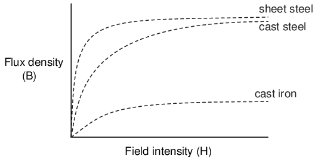
Esto se llama elcurva de magnetización normal, ocurva B-H, para cualquier material en particular. Observe cómo la densidad de flujo para cualquiera de los materiales anteriores (hierro fundido, acero fundido y chapa de acero) se nivela con cantidades crecientes de intensidad de campo. Este efecto se conoce comosaturación. Cuando se aplica poca fuerza magnética (bajo H), solo unos pocos átomos están alineados y el resto se alinea fácilmente con fuerza adicional. Sin embargo, a medida que se acumula más flujo en la misma área de la sección transversal de un material ferromagnético, hay menos átomos disponibles dentro de ese material para alinear sus electrones con fuerza adicional, por lo que se necesita cada vez más fuerza (H) para obtener cada vez menos "ayuda" del material para crear más densidad de flujo (B). Para poner esto en términos económicos, estamos viendo un caso de rendimientos decrecientes (B) de nuestra inversión (H). La saturación es un fenómeno limitado a los electroimanes con núcleo de hierro. Los electroimanes con núcleo de aire no se saturan, pero, por otro lado, no producen tanto flujo magnético como un núcleo ferromagnético para el mismo número de vueltas de cable y corriente.
Otra peculiaridad que confunde nuestro análisis del flujo magnético versus la fuerza es el fenómeno de la fuerza magnética.histéresis. Como término general, histéresis significa un retraso entre la entrada y la salida en un sistema ante un cambio de dirección. Cualquiera que haya conducido un automóvil viejo con dirección "suelta" sabe lo que es la histéresis: para pasar de girar a la izquierda a girar a la derecha (o viceversa), hay que girar el volante una cantidad adicional para superar el "retraso" incorporado en el sistema de articulación mecánica entre el volante y las ruedas delanteras del automóvil. En un sistema magnético, la histéresis se observa en un material ferromagnético que tiende a permanecer magnetizado después de que se ha eliminado la fuerza del campo aplicado (consulte "retentividad" en la primera sección de este capítulo), si la polaridad de la fuerza se invierte.
Usemos el mismo gráfico nuevamente, solo extendiendo los ejes para indicar cantidades tanto positivas como negativas. Primero aplicaremos una fuerza de campo creciente (corriente a través de las bobinas de nuestro electroimán). Deberíamos ver aumentar la densidad de flujo (hacia arriba y hacia la derecha) según la curva de magnetización normal:
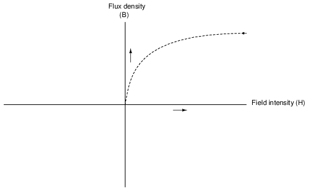
A continuación, detendremos la corriente que pasa por la bobina del electroimán y veremos qué sucede con el flujo, dejando la primera curva todavía en el gráfico:
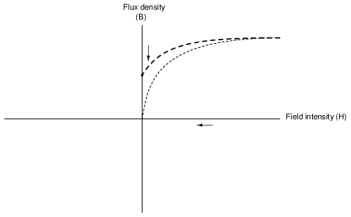
Debido a la retentividad del material, todavía tenemos un flujo magnético sin fuerza aplicada (sin corriente a través de la bobina). Nuestro núcleo de electroimán actúa en este punto como un imán permanente. Ahora aplicaremos lentamente la misma cantidad de fuerza de campo magnético en elopuestodirección a nuestra muestra:
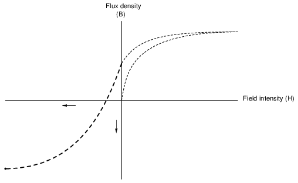
La densidad de flujo ahora ha alcanzado un punto equivalente a lo que era con un valor totalmente positivo de intensidad de campo (H), excepto en la dirección negativa u opuesta. Detengamos nuevamente la corriente que pasa por la bobina y veamos cuánto flujo queda:
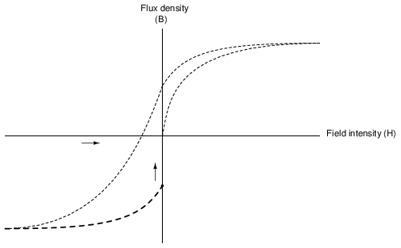
Una vez más, debido a la retentividad natural del material, mantendrá un flujo magnético sin aplicar energía a la bobina, excepto que esta vez será en una dirección opuesta a la de la última vez que detuvimos la corriente a través de la bobina. Si volvemos a aplicar energía en una dirección positiva nuevamente, deberíamos ver que la densidad de flujo alcanza nuevamente su pico anterior en la esquina superior derecha del gráfico:
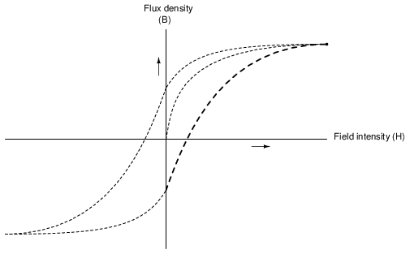
La curva en forma de "S" que trazan estos escalones forma lo que se llamacurva de histéresisde un material ferromagnético para un conjunto dado de extremos de intensidad de campo (-H y +H). Si esto no tiene mucho sentido, considere un gráfico de histéresis para el escenario de dirección de un automóvil descrito anteriormente, un gráfico que representa un sistema de dirección "apretado" y otro que representa un sistema "flojo":
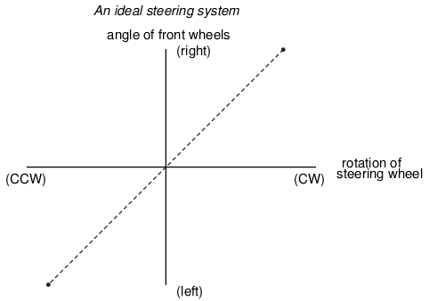
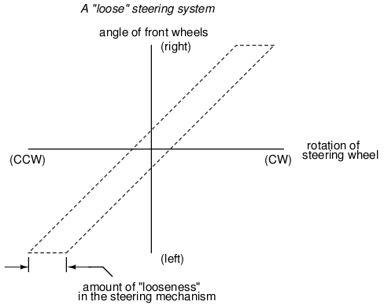
Al igual que en el caso de los sistemas de dirección de los automóviles, la histéresis puede ser un problema. Si está diseñando un sistema para producir cantidades precisas de flujo de campo magnético para cantidades determinadas de corriente, la histéresis puede obstaculizar este objetivo de diseño (debido al hecho de que la cantidad de densidad de flujo dependería de la corriente).y¡Qué fuerte estaba magnetizado antes!). De manera similar, un sistema de dirección flojo es inaceptable en un auto de carreras, donde una respuesta de dirección precisa y repetible es una necesidad. Además, tener que superar la magnetización previa en un electroimán puede ser un desperdicio de energía si la corriente utilizada para energizar la bobina alterna hacia adelante y hacia atrás (CA). El área dentro de la curva de histéresis proporciona una estimación aproximada de la cantidad de energía desperdiciada.
Otras veces, la histéresis magnética es algo deseable. Tal es el caso cuando se utilizan materiales magnéticos como medio para almacenar información (discos de computadora, cintas de audio y video). En estas aplicaciones, es deseable poder magnetizar una mota de óxido de hierro (ferrita) y confiar en la retentividad de ese material para "recordar" su último estado magnetizado. Otra aplicación productiva de la histéresis magnética es el filtrado de "ruido" electromagnético de alta frecuencia (sobretensiones que se alternan rápidamente) del cableado de señales pasando esos cables por el medio de un anillo de ferrita. La energía consumida para superar la histéresis de la ferrita atenúa la intensidad de la señal de "ruido". Curiosamente, la curva de histéresis de la ferrita es bastante extrema:
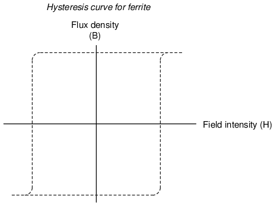
- REVISAR:
- La permeabilidad de un material cambia con la cantidad de flujo magnético que lo atraviesa.
- La relación específica entre la fuerza y el flujo (intensidad de campo H y densidad de flujo B) se representa gráficamente en una forma llamadacurva de magnetización normal.
- Es posible aplicar tanta fuerza de campo magnético a un material ferromagnético que no se pueda meter más flujo en él. Esta condición se conoce como magnética.saturación.
- cuando elretentividadde una sustancia ferromagnética interfiere con su remagnetización en la dirección opuesta, una condición conocida comohistéresisocurre.
Electromagnetic induction
Si bien el sorprendente descubrimiento del electromagnetismo por parte de Oersted abrió el camino para avances más prácticosaplicacionesde la electricidad, fue Michael Faraday quien nos dio la clave para la prácticageneraciónde la electricidad: inducción electromagnética. Faraday descubrió que se generaría un voltaje a través de un trozo de cable si ese cable estuviera expuesto a un flujo de campo magnético perpendicular de intensidad variable.
Una forma sencilla de crear un campo magnético de intensidad variable es mover un imán permanente junto a un cable o una bobina de cable. Recuerde: el campo magnético debe aumentar o disminuir en intensidadperpendicularal cable (de modo que las líneas de flujo "atraviesen" el conductor), de lo contrario no se inducirá voltaje:
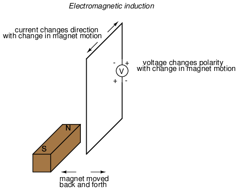
Faraday pudo relacionar matemáticamente la tasa de cambio del flujo del campo magnético con el voltaje inducido (obsérvese el uso de una letra "e" minúscula para voltaje. Esto se refiere ainstantáneovoltaje, o voltaje en un momento específico en el tiempo, en lugar de un voltaje constante y estable.):
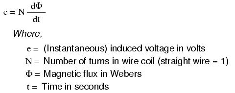
Los términos "d" son notación de cálculo estándar y representan la tasa de cambio del flujo a lo largo del tiempo. "N" representa el número de vueltas o vueltas en la bobina de alambre (suponiendo que el cable tenga la forma de una bobina para una máxima eficiencia electromagnética).
Este fenómeno tiene un uso práctico obvio en la construcción de generadores eléctricos, que utilizan energía mecánica para mover un campo magnético a través de bobinas de alambre para generar voltaje. Sin embargo, este no es de ninguna manera el único uso práctico de este principio.
Si recordamos que el campo magnético producido por un alambre por el que circula corriente siempre fue perpendicular a ese alambre, y que la intensidad del flujo de ese campo magnético variaba con la cantidad de corriente que lo atraviesa, podemos ver que un alambre es capaz de inducir un voltaje.a lo largo de su propia longitudsimplemente debido a un cambio en la corriente que lo atraviesa. Este efecto se llamaautoinducción:un campo magnético cambiante producido por cambios en la corriente a través de un cable que induce voltaje a lo largo de ese mismo cable. Si el flujo del campo magnético se mejora doblando el cable en forma de bobina y/o envolviendo esa bobina alrededor de un material de alta permeabilidad, este efecto de voltaje autoinducido será más intenso. Un dispositivo construido para aprovechar este efecto se llamainductor, y se analizará con mayor detalle en el próximo capítulo.
- REVISAR:
- Un campo magnético de intensidad variable perpendicular a un cable inducirá un voltaje a lo largo de ese cable. La cantidad de voltaje inducido depende de la tasa de cambio del flujo del campo magnético y del número de vueltas de alambre (si está enrollado) expuestas al cambio de flujo.
- Ecuación de Faraday para tensión inducida: e = N(dΦ/dt)
- Un cable que transporta corriente experimentará un voltaje inducido a lo largo de su longitud si la corriente cambia (cambiando así el flujo del campo magnético perpendicular al cable, induciendo así voltaje de acuerdo con la fórmula de Faraday). Un dispositivo construido específicamente para aprovechar este efecto se llamainductor.
Mutual inductance
Si dos bobinas de alambre se acercan entre sí de modo que el campo magnético de una se enlace con la otra, como resultado se generará un voltaje en la segunda bobina. esto se llamainductancia mutua:cuando el voltaje aplicado a una bobina induce un voltaje en otra.
Un dispositivo diseñado específicamente para producir el efecto de inductancia mutua entre dos o más bobinas se llamatransformador.
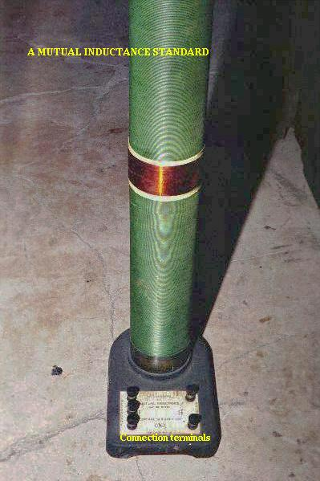
El dispositivo que se muestra en la fotografía de arriba es una especie de transformador, con dos bobinas de alambre concéntricas. En realidad, está pensado como una unidad estándar de precisión para la inductancia mutua, pero para ilustrar cuál es la esencia de un transformador, será suficiente. Las dos bobinas de alambre se pueden distinguir entre sí por el color: la mayor parte de la longitud del tubo está envuelta en un cable aislado de color verde (la primera bobina), mientras que la segunda bobina (cable con aislamiento de color bronce) se encuentra en el medio de la longitud del tubo. Los extremos de los cables llegan hasta los terminales de conexión en la parte inferior de la unidad. La mayoría de las unidades de transformadores no están construidas con sus bobinas de alambre expuestas de esta manera.
Debido a que el voltaje inducido magnéticamente solo ocurre cuando el flujo del campo magnético escambioEn cuanto a la fuerza relativa al cable, la inductancia mutua entre dos bobinas solo puede ocurrir con voltaje alterno (cambiante - CA), y no con voltaje directo (constante - CC). Las únicas aplicaciones de la inductancia mutua en un sistema de CC es cuando hay algún medio disponible para encender y apagar la bobina (creando así unapulsanteVoltaje CC), el voltaje inducido alcanza su punto máximo en cada pulso.
Una propiedad muy útil de los transformadores es la capacidad de transformar niveles de voltaje y corriente de acuerdo con una relación simple, determinada por la relación de vueltas de las bobinas de entrada y salida. Si la bobina energizada de un transformador se energiza mediante un voltaje de CA, la cantidad de voltaje de CA inducida en la bobina sin alimentación será igual al voltaje de entrada multiplicado por la relación entre las vueltas de los cables de salida y de entrada en las bobinas. Por el contrario, la corriente a través de los devanados de la bobina de salida en comparación con la bobina de entrada seguirá la relación opuesta: si el voltaje aumenta de la bobina de entrada a la bobina de salida, la corriente disminuirá en la misma proporción. Esta acción del transformador es análoga a la del engranaje mecánico, la polea de la correa o las relaciones de la rueda dentada de la cadena:
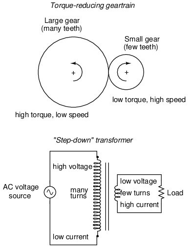
Un transformador diseñado para generar más voltaje del que recibe a través de la bobina de entrada se llama transformador "elevador", mientras que uno diseñado para hacer lo contrario se llama "reductor", en referencia a la transformación de voltaje que tiene lugar. La corriente a través de cada bobina respectiva, por supuesto, sigue exactamente la proporción opuesta.
- REVISAR:
- La inductancia mutua es donde el campo magnético generado por una bobina de alambre induce voltaje en una bobina de alambre adyacente.
- A transformadorEs un dispositivo construido con dos o más bobinas muy próximas entre sí, con el propósito expreso de crear una condición de inductancia mutua entre las bobinas.
- Los transformadores sólo funcionan concambiovoltajes, no voltajes constantes. Por lo tanto, pueden clasificarse como dispositivos de CA y no de CC.
Colaboradores
Los contribuyentes a este capítulo se enumeran en orden cronológico de sus contribuciones, desde el más reciente hasta el primero. Consulte el Apéndice 2 (Lista de colaboradores) para fechas e información de contacto.
Jason Stark(Junio de 2000): Formato de documentos HTML, que dio lugar a una segunda edición mucho más atractiva.
Lecciones en circuitos eléctricoscopyright (C) 2000-2023 Tony R. Kuphaldt, según los términos y condiciones delCC BY License.